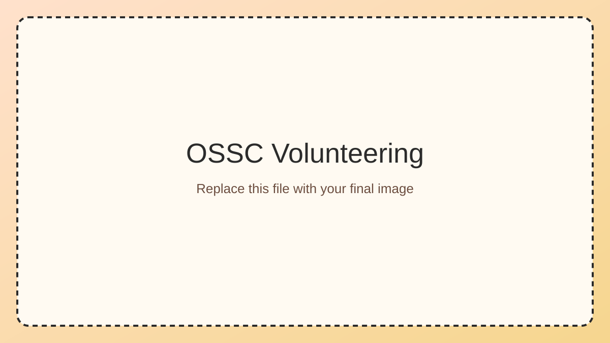
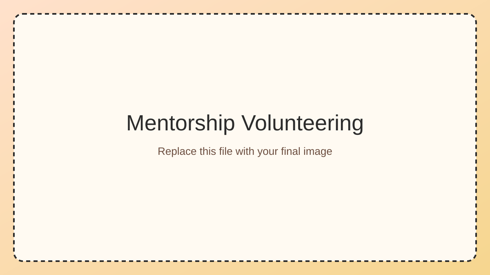
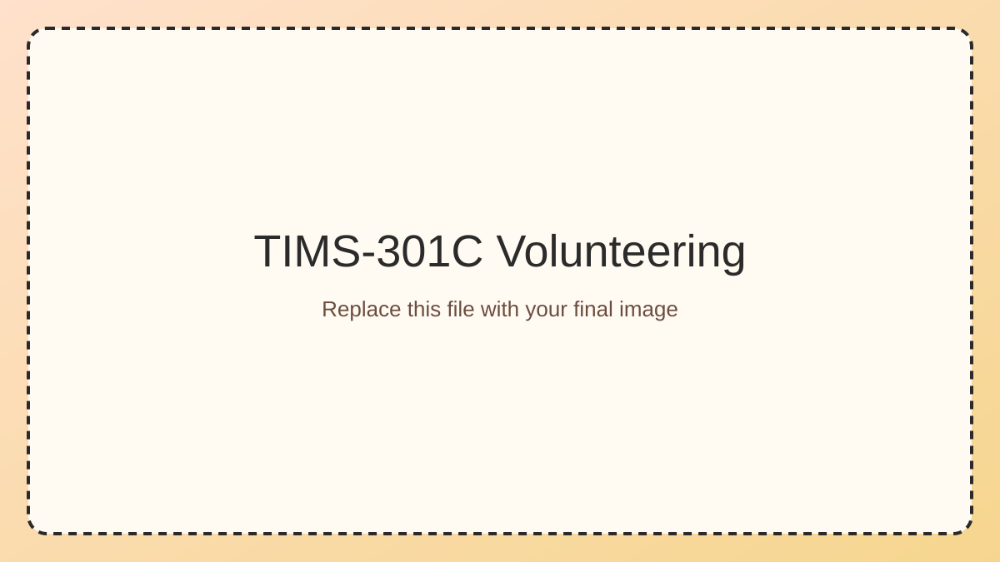
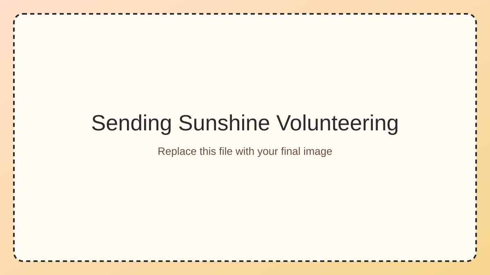
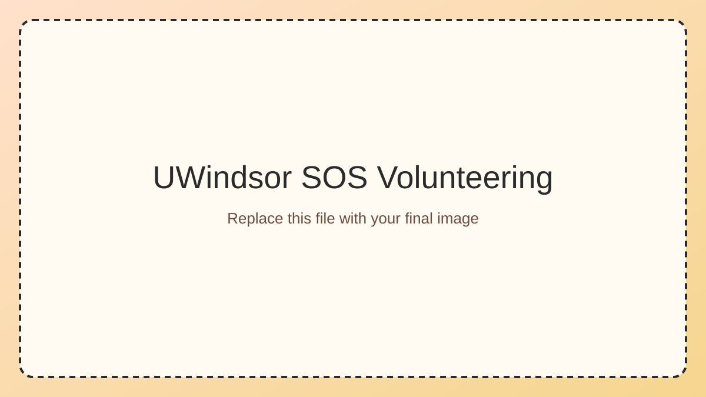

Outstanding Scholar Student Council

Represented peer perspectives across cohorts and contributed to planning, outreach, and program-level improvements.
Outstanding Scholar Mentor

Guided incoming students through their transition to university and introduced them to research opportunities, academic resources, and campus support systems.
TIMS-301C System Proposal

Evaluated laboratory teaching hardware for instructional effectiveness and co-authored recommendations to support equipment investment decisions.
Sending Sunshine

Managed financial records while supporting initiatives aimed at reducing social isolation among senior communities through handwritten outreach.
UWindsor SOS

Supported outreach and tutorial promotion to increase student engagement and fundraising for accessible education initiatives in Latin America.